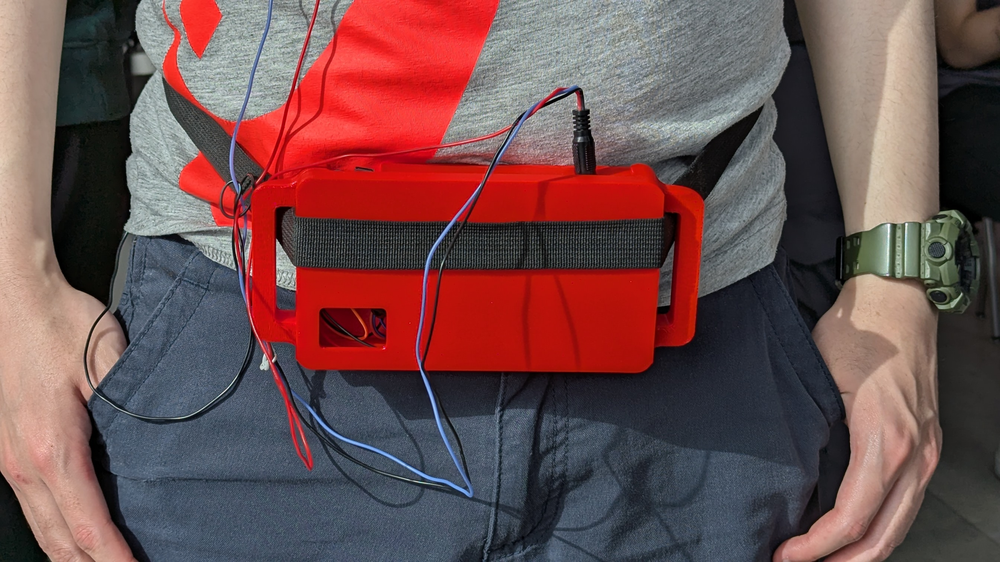
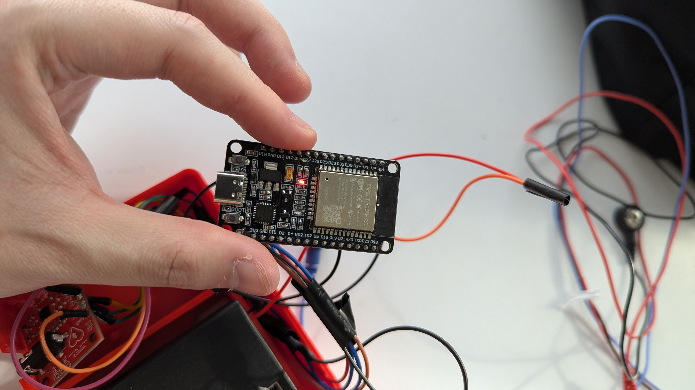
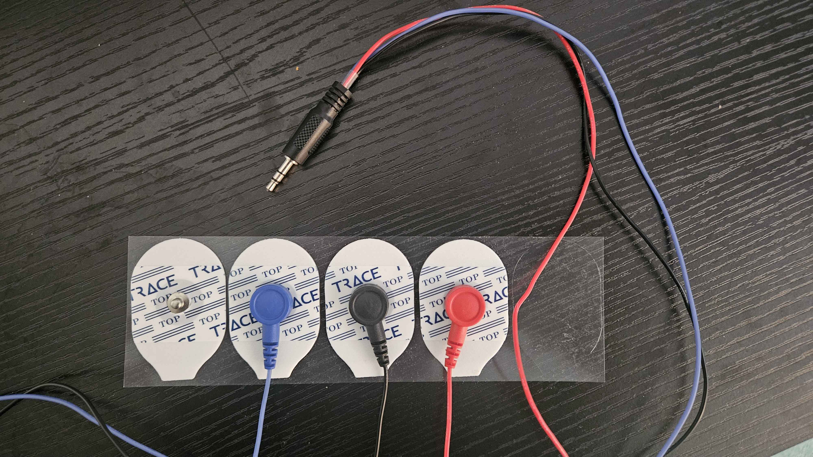

Salwan Aldhahab
Hardware & Software Engineer
Project 01 · Embedded Systems
Wearable single-lead ECG acquisition node streaming real-time heart waveforms over Wi-Fi to a Django/Channels backend, cleaned by an 8-stage DSP pipeline, and rendered live in a browser dashboard.
A patient wears an ESP32 + AD8232 node on their torso. The device continuously digitises the single-lead ECG at 250 Hz and streams 250-sample batches over Wi-Fi to a Django/Channels server, which runs an 8-stage DSP filter and fans the cleaned waveform out to every connected browser in real time.
| Tier | Technology | Role |
|---|---|---|
| Acquisition | ESP32 · AD8232 · ArduinoWebsockets · ArduinoJson | Digitise ECG, batch & transmit over Wi-Fi |
| Processing | Django 5 · Channels · Daphne · NumPy · SciPy · PyWavelets | Receive, filter, and broadcast each batch |
| Visualisation | Chart.js 4.4.1 · HTML5 / JavaScript | Rolling-buffer live waveform in the browser |
Three electrodes (RA, LA, RL reference) feed the AD8232 analog front-end, which amplifies, common-mode-rejects, and band-passes the ECG signal into the ESP32's input range. The AD8232 output drives GPIO36 (ADC1_CH0 — the input-only VP pin), sampled at 12-bit resolution. The firmware collects 250 samples at 4 ms intervals (~250 Hz), serialises them as {"ecg":[…]}, and sends the JSON over a persistent WebSocket. If the connection drops, the device reconnects transparently before the next batch.
| Parameter | Value |
|---|---|
| ADC pin | GPIO36 (ADC1_CH0, input-only VP) |
| ADC resolution | 12-bit · codes 0–4095 |
| Sampling rate | ≈ 250 Hz (SAMPLE_DELAY_MS = 4) |
| Batch size | 250 samples · ≈ 1 s per transmission |
| WebSocket endpoint | ws://<server>:8000/ws/ecg/ |



Every incoming batch passes through filter_ecg_signal() in ecg/filters.py on the server before being broadcast. The pipeline is built on NumPy, SciPy (butter, sosfiltfilt, iirnotch, savgol_filter, welch), and PyWavelets. Any stage that errors out fails gracefully so a single bad batch never breaks the live stream.
Standard Django's request/response cycle cannot hold a long-lived bidirectional connection open, so the project runs on the ASGI stack: Django Channels adds WebSocket support and Daphne serves the application. Both the ESP32 device and every dashboard browser connect to the same ws/ecg/ endpoint and are placed into a single Channels group (ecg_group), enabling one producer to fan out to many viewers simultaneously.
The ECGConsumer lifecycle: connect() joins the group → receive() parses the raw batch and calls filter_ecg_signal() → group_send dispatches the cleaned array to all group members → send_ecg() serialises and pushes {"filtered":[…]} to each socket. The in-memory channel layer is used for development; a Redis layer is required for multi-process deployment.
A single-page Chart.js 4.4.1 dashboard keeps a rolling 1000-sample buffer (~4 s at 250 Hz). Each incoming batch is appended to the right while the oldest samples drop off the left, producing the scrolling-trace effect of a bedside monitor. The y-axis is pinned to 0–4095 so the waveform scale stays stable regardless of signal amplitude, and chart animation is disabled for instantaneous per-batch redraws. Because every browser tab subscribes to the same ecg_group, opening the dashboard on multiple machines shows the same live trace across all of them — making the monitor genuinely remote.